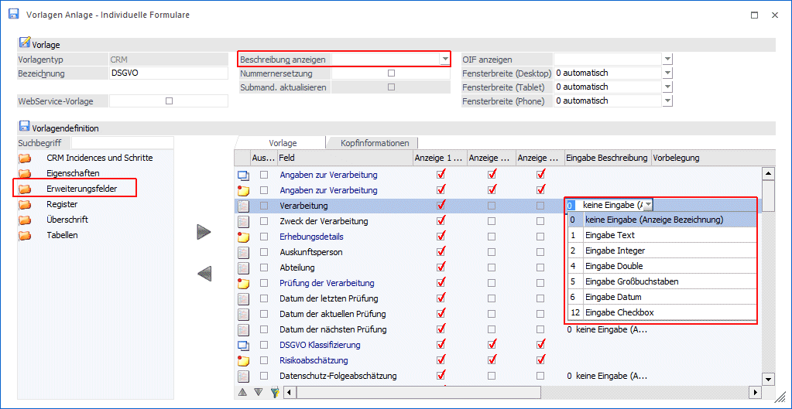

Zusätzlich kann zu den Erweiterungsfeldern ein Beschreibungstext hinterlegt werden. Bei den Beschreibungsfeldern stehen folgende Formatierungen zur Verfügung:
ü Keine Eingabe (Anzeige Bezeichnung)
ü Eingabe Text
ü Eingabe Integer
ü Eingabe Double
ü Eingabe Großbuchstaben
ü Eingabe Datum
ü Eingabe Checkbox

Beschreibungstexte können bei Erfassen der Deckblätter mit zusätzlichen Informationen befüllt werden.
Hinweis
Bei der Option "Beschreibungen anzeigen" müssen diese aktiviert werden.